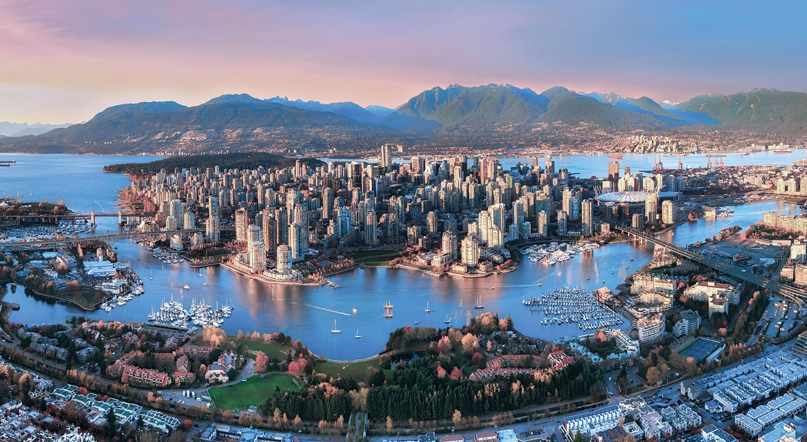
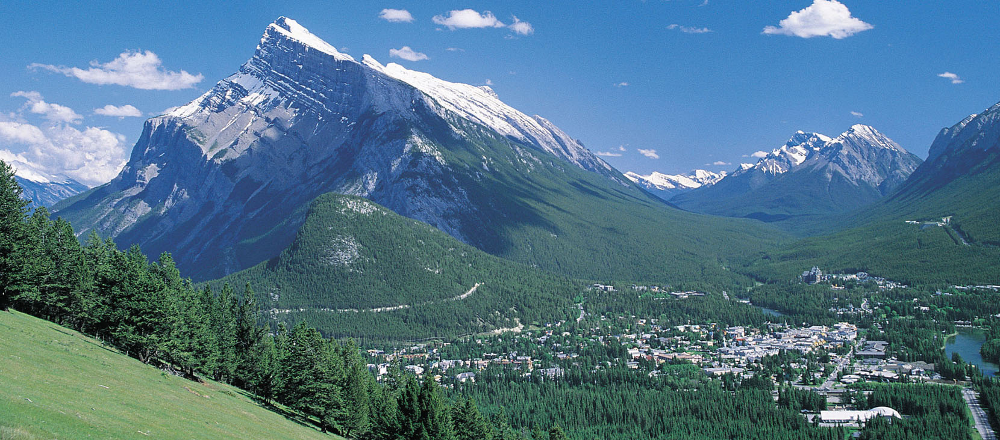

加拿大为北美洲最北的一个国家，有独特的清凉夏季和枫叶般艳红的秋天， 素有“枫叶之国”的美誉。在加拿大广袤的国土上，有着难以计数的奇观美 景，境内有着多姿多彩的地形地貌，巍峨的高山，雄浑的高原，富饶的谷 地，众多的湖泊以及纵横交错的河流与星罗棋布的岛屿一起构成了加拿大 神奇、独特而别具魅力的自然风光。
虽然温哥华是一个繁华的都市，但是与许多北美国家不同，这里的景点呈现 给游客的却是一片宁静祥和的气氛。你可以在温哥华环游斯坦利公园欣赏海 天一色的景致，可以在古老的杉树林中漫步，可以从能俯视整个市区美景的 山顶上滑雪而下，还可以乘船在高楼倒影斑驳的水中航行。而对于那些喜欢 探究社区核心部分的闹市漫游者来说，温哥华更是都市冒险家的乐园：你可 以从学生服饰商场逛到前嬉皮士社区，可以在耶鲁城漫步或者晚餐，可以到 唐人街熙熙攘攘的街道寻找美食。这个城市可游览探索的东西太多太多，不 管怎么游览，你都可以沉静在这座美丽的大都市。
俯瞰温哥华
史丹利公园(Stanley Park)是温哥华最著名的公园，占地一千英亩，一条8.8 公里长的路径环绕整个公园，以供游人缓步、骑脚踏车或玩滚轴溜冰；每年有 大概250万人次使用此路径， 是北美最大的城市公园亦是世界最闻名的公园之一。 1888年，公园正式开幕，以加拿大总督斯坦利爵士之名为其命名。这里有三个大沙 滩、动物园、水族馆、小小高尔夫球场、玫瑰花园、小型火车及数之不尽巨型圆腾柱。

史丹利公园一角
卡皮拉诺吊桥公园是温哥华最古老的观光景点。这被誉为世界上最伟大的吊桥， 全长450英尺，当风掠过山谷时吊桥会摇摆发声，颇似人的笑声，因此也被称为“笑桥”。 从100多年前起，吊桥便以2条粗麻绳及香板木悬挂在高230英尺的卡皮拉诺河谷上，下面是 卡皮兰诺河谷，让人心惊肉跳。吊桥公园中，有60年前印第安人所雕刻且置放于此的图腾柱， 色彩鲜艳、引人注目。位于图腾柱旁的历史陈列区，陈列许多当时兴建吊桥的历史照片，可以 了解先人筑桥的故事。图腾柱另一边是纪念用品店，里面贩售许多印第安纪念品及明信片等。 整个公园被吊桥分为东西两侧，一共大致有4个部分：吊桥、悬崖漫步、树上漫步、散步道。在 图腾柱的另外一边还有用来科普雨林中植物以及其他地理知识的这么一小片区域，虽然也有很多 人造的痕迹，由着木头台阶而下就可以来到140多米长，40多层楼高的吊桥上面，在桥上可以看尽 “人生百态”。

卡皮拉诺吊桥
格兰威利岛是一个充满活力的地方。你可以在温哥华市内跳上形状颇似一只玩具澡盆的小型渡轮前 往格兰威利岛，它们穿梭于福溪与格兰威利岛之间。岛上因全年开放的室内农产品市场、精致的 小型酿酒厂、街头艺人、艺术家工作室以及现场表演而闻名于世。与商业区不同的是，这里每到 周末都会充满活力，因为许多情侣、游客都会在这个时候不约而同地来到这里，给这里增添了不 少的魅力。

格兰佛岛

公共市场
班夫国家公园（Banff National Park）是加拿大历史最悠久的国家公园，也是世界上最早的3个国家森林 公园之一，其历史可与美国黄石国家森林公园、澳大利亚皇家公园媲美。班芙国家公园坐落于落基山脉北段， 距加拿大艾伯塔省卡尔加里市以西约110-180公里处。公园共占地6641平方公里，遍布冰川、温泉、松林、 湖泊，园内的植物动物种类繁多，有很多都是濒危物种，大开眼界的同时也要注意生态保护。
从数字解读班芙：
加拿大第一座国家公园
世界第三座国家公园
占地超过6000平方公里
班夫镇拥有8300位永久居民
班夫拥有7处国家历史遗址
班夫拥有3座世界级滑雪场
班夫现存80只大灰熊
班夫现存1000头麋鹿
班夫国家公园全年开放，最好的游览季节是6月到8月期间，这个期间温度较为舒适，适合徒步和自驾。如果你 要在这几个月期间出行，一定要提前预定住宿。每年的10月到次年5月天气较为寒冷，但是非常适合喜欢滑雪 运动的游客。冬天除了受恶劣天气影响时会暂停使用一些道路，主要的交通线路全年都会保持开通。
多伦多是加拿大第一大城市，是加拿大文化、经济的发源地，也是交通要枢，兼全国制造业的心脏。在多伦多的 对岸，是美国的纽约州，闻名世界的尼亚加拉大瀑布，距多伦多仅100公里。多伦多Toronto是印第安的Huron 族语，“会面之地”之意。多伦多享有世界上最多元化城市的美誉，包容了来自一百多个国家的移民，在大街上走 动的人肤色各异，社会、饮食、娱乐、艺术、购物和游憩特色，演绎出文化的多元性。在这里游览一圈下来，也 算是逛了大半个世界。它拥有傲人的城市风景线，包括现代奇观之一的加拿大国家电视塔，美丽迷人的安大略湖， 延绵数里的湖滨走廊和世界著名的建筑设计师在多伦多留下的大手笔。
多伦多市政厅
加拿大国家电视塔是多伦多的标志，也是游客到多伦多市必看的景点。电视塔高553.33米，自上而下由 基座、观景台、“天空之盖”和天线塔4部分组成。其中最有名的是距离地面351米的360°旋转餐厅观景 台，这个餐厅旋转一周需时72分钟，用餐的顾客无须移步便可将多伦多360°全景尽收眼底。电视塔最独 特之处是在观景台所建的玻璃地面，这块呈扇形的玻璃地面有342米高，几乎让每个尝试踏月这块地面的 游客都是战战兢兢，如果再俯视玻璃下面如蚂蚁般微小的地面景物，更是惊心动魄。不过，还是有不少 “冒险”者走上去一偿心愿。

加拿大国家电视塔
卡萨罗马城堡建于1911年，是加拿大最早的古堡，由富有的金融家亨利拉特男爵修建。古堡内约有90多间 装饰华丽的房间，神秘的塔楼，长达270米的幽深隧道，规模庞大的马厩，还有隐藏的暗道，典雅的温室花 房，和一个面积达20234万平方米、依山而建的神秘花园。走廊两侧的中世纪盔甲，以及古堡内嘎嘎作响的 木地板，令人有种时光交错的感觉，仿佛身处百余年的豪门巨宅之中。

加拿大国家电视塔
这个城市是有世界著名的组三个大瀑布之一的尼亚加拉大瀑布，这样的城市有世界上主要的旅游景点之一，自然奇观吸 引数百万游客每年。 这个区域，沿尼亚加拉公园大道和旅游大道延伸，尤其集中在瀑布的边缘除了沿河的自然景观， 还包括瞭望塔，高级宾馆，纪念品商店，娱乐场和剧院，五颜六色的霓虹灯广告牌和广告，以及足够的停车位，以适应游客。
Date modified: 2019-02-27